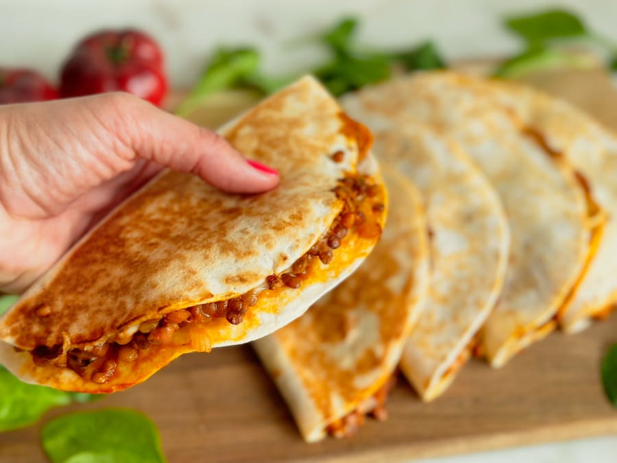

Ingredientes
- Huevo: 1/4 unidad por porción
- Yogur Griego: 1/4 unidad por porción
- Limón: 1/4 unidad por porción
- Mantequilla: 13 gramos por porción
Ingredientes de Despensa
- Azucar: 30 gramos por porción
- Harina de Trigo: 55 gramos por porción
Pasos a Seguir
- Paso 1: Lava un limón y ralla su piel. Resérvala.
- Paso 2: En una batidora vierte el huevo, la mantequilla derretida y el azúcar. Bate varios minutos hasta lograr una mezcla cremosa y uniforme.
- Paso 3: Agrega la ralladura del limón y con una espátula intégrala con la mezcla líquida.
- Paso 4: Poco a poco ve añadiendo la harina a la mezcla líquida, y ve mezclando con la espátula, hasta lograr una mezcla homogénea y sin grumos.
- Paso 5: Mete la mezcla en la nevera y deja enfriar una hora aproximadamente.
- Paso 6: Pasado la hora saca la masa de nevera. Precalienta el horno a 180ºC. Coge trozos y ve dando forma de galletas a la masa. Termina esparciendo un poco de azúcar glass por encima de todas las galletas y hornéalas 15 minutos a 180ºC.
- Paso 7: Sácalas del horno y deja que se enfríen. Así endurecerán por fuera aunque serán blanditas por dentro.
Imagen de la receta
